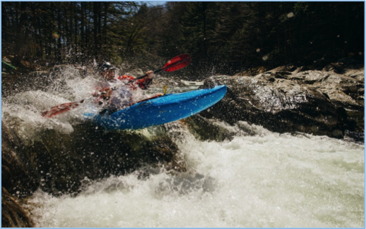
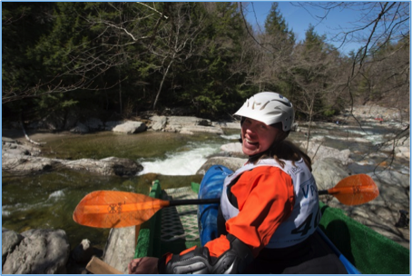
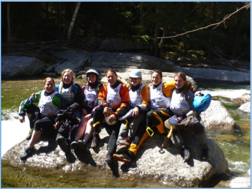
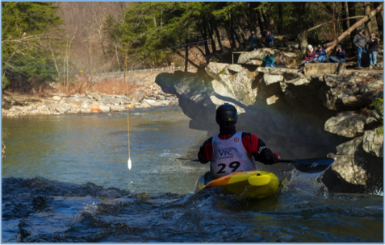

To be or not to be, that was the question... Vermont had its worst winter in history and our spring runoff didn’t exist this year. In spite of no watery goodness from our standard snow pack, we were getting weekly deluges that would spike our rivers to fun flows and beyond, only to flush out in a day or two. This was the cycle for late March and early April.
Time to improvise…. We decided it was best to cut the race course in half. This required some creative thinking for the ramp placement. Ultimately we put the ramp in just above the Ledges section of the run. The ramp installation made for a long and steep angle to the kicker that landed you feet from the entry rapid to the Ledges section. We were very happy with the location and installation. Now we just needed to have the water hold for another 24 hours
Saturday came bright and cold with the mercury predicted to head upwards of 65 degrees. At 7:30 when I arrived the levels looked to have held. Game On!!! Will and I got to it setting up the registration table and sipping some nice hot coffee as racers began to trickle in. The standard comment was, “Man, it seems a little on the low side” and “Are you sure we can race this at that level.” Both Will and I sort of grinned and said “Get suited up and take a practice lap”.
As the registration numbers rose above 20, Will and I were pleasantly surprised because we didn’t expect any more than 20 due to low water levels. Ultimately we had 48 racers signed up by 10am, ready for the pre-race meeting. 48 racers is our highest number of registrants since 2011. The low flows didn’t seem to deter the racers from donning a race bib and getting on the start ramp.
What was obvious from the beginning of the day was that everyone was on board with having a good time, enjoying the sunshine and what flow we actually had to boat on. I’m pretty sure that there wasn’t a single person without a smile on their face by the time the last racer crossed the finish line.
Something of note for the 2016 Race was that we had 7 women race this year. We have never had more than 3, ever! It was awesome seeing these women on the course and hammering it out as fast if not faster than a number of the “dudes”. I also think they were smiling bigger than any of the guys
Over all, the race went off without a hitch. Without a hitch to a race coordinator is considerably different than what a participant would say, but I think I can cover both bases here. The weather was brilliant, the flow was perfect, we had no incidents or accidents to report, and I think everyone had a good time.
Our sponsorship was once again top notch, we had our usual suspects that have been long time supporters and we picked up a new one. Our sponsors really make the event legitimate with the prizes that they so generously provide. Our original two sponsors Mountain Khaki and Shred Ready were once again happy to step up and provide us with schwag for our local race. Werner Paddles, Five Ten, Astral Buoyancy, Liquid Logic, Stohlquist Waterwear, NPMB, Watershed Zipdry, Immersion Research and Otter Creek Brewing all have been helping us with the race the last two to three years and the racers are always excited to see them on board as sponsors. Also, we had a new comer this year with Darn Tough Socks. It was very cool to have another local VT sponsor. We rewarded online registrants with a free pair of Darn Tough socks. Lastly, our local club, the Vermont Paddlers Club sponsors the race every year in a number of ways. Without the VPC’s support this race wouldn’t be nearly as smoothly run as it has over the last 8 years. Thank you to all of our sponsors!
Winners – Anyone that shows up to race is a winner. I am pretty sure we had enough schwag and prizes on hand that even with 48 racers everyone went home with something, even if it was just a Beer Coozie or two. Interestingly enough, it seems that if you have a background in Nordic ski racing you are on the podium. This year, Culley Brown, a Nordic ski racer, was blistering fast on his 2nd lap posting a 2:23. Justin Beckwith (another Nordic ski racer) is a three time winner but couldn’t find the extra 3 seconds to out run Culley, posting a time of 2:25. In third, we had a tie between Cody Wasuta and Cameron Fearey at 2:28. The women were in the mix with Becca Austin ripping a 2:46 as the fastest female, bringing her in ahead of a vast majority of the men that entered the race. There were other awards handed out at the race including best carnage, youngest racer, oldest racer, longest drive, etc... We had a lot of fun with the awards!
The future of the New Haven Ledges Race…. Look for it in 2017. We once again were light on our feet and made the race happen in spite of challenging conditions with flows. A lot of the racers liked the shortened course, the longer and steeper starting ramp and even some prefer the lower flows. We, the organizers, appreciate that folks keep showing up and keep having fun. Without the racers we have no race, DUH! We want to keep the racers having fun so they can give us feedback about what they want to see in the race, keeping it fresh and relevant.
It’s a tradition to be the first Creek Race of the season, its family and friends that look to knock the cobwebs off on the Ledges and get their season started proper in VT. We like that and we’ll keep it coming if you keep coming…
Pictures provided by Eric Adsit.